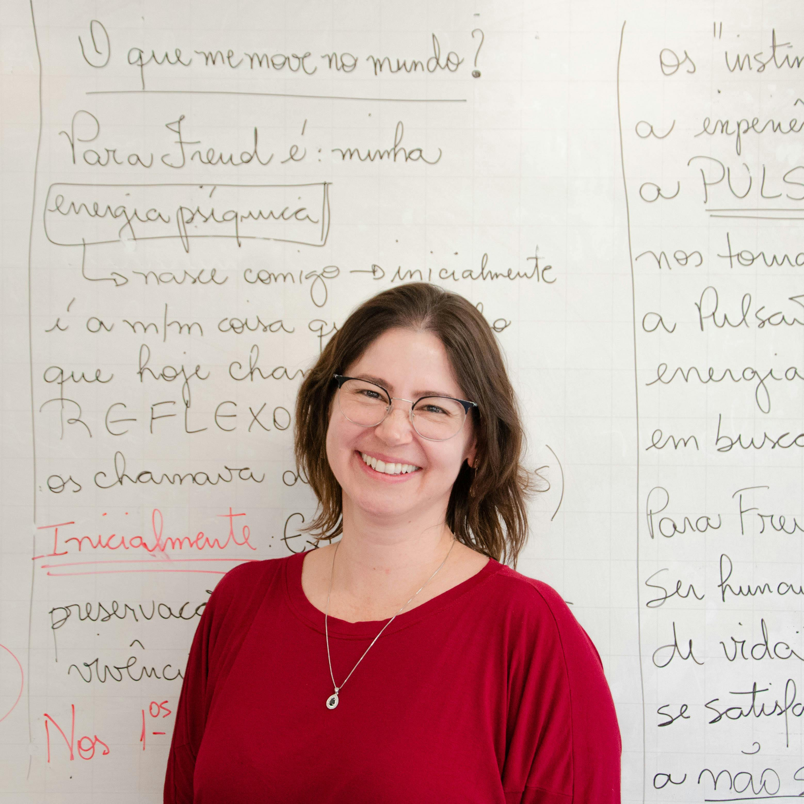

The world's most beautiful language — taught by native Romans and CILS-certified coaches from Florence. Speak confidently in Italy and beyond — in art galleries, restaurants, business halls, and the streets of Roma — in just 12 weeks.
Italian is spoken by over 65 million people across Italy, Switzerland, San Marino, and diaspora communities worldwide. It is the language of Leonardo, Dante, Verdi, and Ferrari — a language so musicale that it gave the world the vocabulary of classical music itself: piano, forte, allegro, soprano.
Our Italian programme puts real conversation at the heart of every session. Each class is led live by a certified native tutor — from Rome, Milan, Naples, or Florence — in groups of just 6 students. You'll roleplay authentic Italian scenarios: ordering at a trattoria, navigating Florence, negotiating at a Milanese business meeting.
We cover all 12 Italian levels from A1 (complete beginner) to C2 (native mastery), with dedicated tracks for CILS/CELI exam preparation, Business Italian for fashion and luxury industries, and a special Opera & Culture track for enthusiasts.
Eight core Italian skills developed across 12 weeks of live, native-led practice — from first words to confident fluency.
12 weeks structured into 4 phases — each building directly on the last, from "Ciao!" to full Italian fluency.

Giulia is a native Roman with a Laurea Magistrale in Filologia Italiana from La Sapienza, Università di Roma, and a CILS examiner certification from the Università per Stranieri di Siena. She spent eight years teaching Italian at the Istituto Italiano di Cultura in Mumbai and New Delhi before joining SpeakEasy.
Her classes are famous for an infectious passion for Italian culture and results. Giulia has personally prepared over 2,100 students for CILS and CELI certification, with a 95% first-attempt pass rate.
Live sessions 3× per week in flexible time slots. All sessions recorded — miss one and catch up within 2 hours at your own pace.